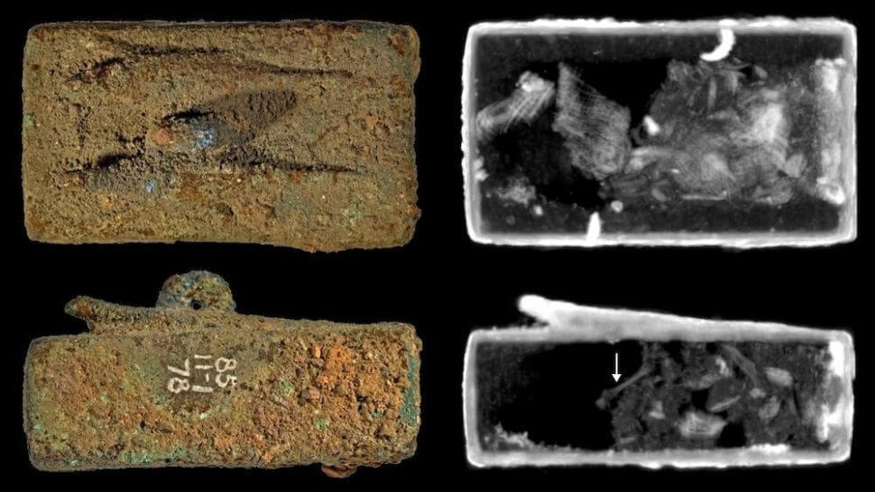

အခုတော့ နောက်ဆုံးပေါ် နည်းပညာ တွေကို အသုံးပြုပြီး သိပ္ပံ ပညာရှင် တွေဟာ ဒီ ခေါင်းတလားတွေကို မဖွင့်ပဲ အထဲမှာ ဘာတွေ ထည့်သွင်း မြှုပ်နှံခဲ့ သလဲ ဆိုတာကို အဖြေဖော် နိုင်ခဲ့ပြီ ဖြစ်ပါတယ်။
ဒီ ခေါင်းတလား ၆ ခုကို မူရင်း သင်္ချိုင်းတွေကနေ တူးဖော် ရရှိပြီးတဲ့နောက် လန်ဒန်မြို့က ဗြိတိသျှ ပြတိုက် (British Museum) ကို ရွှေ့ပြောင်းပြီး သိမ်းဆည်း ထားခဲ့ပါတယ်။
ဒီ ခေါင်းတလားတွေရဲ့ အရွယ်အစားက သေးသေးလေးတွေပါ။ အသေးဆုံး ခေါင်းတလားရဲ့ အရှည်ဟာ ၂ လက်မပဲ ရှိပြီး အရှည်ဆုံးက ၁၂ လက်မပဲ ရှိပါတယ်။ ဒီ ခေါင်းတလားတွေကို မြှုပ်နှံခဲ့တဲ့ နှစ်ကာလ ကလဲ ဘီစီ ၆၆၄ ခုနှစ်ကနေ ဘီစီ ၂၅၀ အကြားမှာ မြှုပ်နှံခဲ့ ကြတာပါ။ (လွန်ခဲ့တဲ့ နှစ်ပေါင်း ၂၅၀၀ ကနေ ၂၂၀၀ ကျော် အကြားပေါ့။)
ဒီခေါင်းတလားတွေကို ၁၈၈၅ ခုနှစ်မှာ နော်ခရာတစ်စ် (Naukratis) နဲ့ တဲလ်အယ်လ် ရေဟူဒီယာ (Tell el-Yehudiyeh) မြို့ဟောင်းတွေကနေ တူးဖော် ရရှိခဲ့တာ ဖြစ်ပါတယ်။ ဒီ ခေါင်းတလား အားလုံးကို ကြေးသတ္တုစပ် နဲ့ ပြုလုပ်ထားပြီး ခေါင်းတလား တွေအပေါ်မှာ ပုတ်သင်၊ ငါးရှဉ့် နဲ့ မြွေဟောက် တွေရဲ့ ပုံတွေ ထွင်းထု ထားပါတယ်။
ခေါင်းတလား တစ်ခုရဲ့ အပေါ်မှာ လူခေါင်းနဲ့ ငါးရှဉ့် နဲ့ မွေဟောက်စပ် ထားတဲ့ ပုံကို ထွင်းထုထားပြီး ဒီ သတ္တဝါရဲ့ ဦးခေါင်းမှာ သရဖူလဲ ဆောင်းထား ပါသေးတယ်။ ပညာရှင် တွေက ဒါဟာ ရှေးဟောင်း အီဂျစ်နတ်ဘုရား အေတူမ်း (Atum) ကို ကိုယ်စားပြုတယ်လို့ ယူဆ ကြပါတယ်။
ဒီ ခေါင်းတလားပေါ် ထွင်းထုထားတဲ့ ပုံတွေဟာ အတွင်းမှာ ထည့်သွင်း မြှုပ်နှံထားတဲ့ အရာဝတ္ထုတွေအတွက် သဲလွန်စတွေ ဖြစ်တယ် ဆိုတာကို ပညာရှင်တွေ တွေ့ရှိ ခဲ့ကြပါတယ်။ သူတို့ရဲ့ တွေ့ရှိမှုကို ဧပြီလ ၂၀ ရက်နေ့ထုတ် Scientific Report သုတေသန ဂျာနယ်မှာ ဖေါ်ပြထားပါတယ်။

ခေါင်းတလား တခု အတွင်းမှာ မြောက်အာဖရိက အိမ်မြှောင် ခေါင်းတစ်ခုကို ဖြတ်ပြီး ထည့်သွင်း မြှုပ်နှံ ထားခဲ့တာကို အံ့ဩဖွယ်ရာ တွေ့ကြရပါတယ်။ အခြား ခေါင်းတလား နှစ်ခု အတွင်းမှာလဲ အမျိုးအမည် ခွဲခြားမရသေးတဲ့ တိရစ္ဆာန် အရိုး အပိုင်းအစ တွေကို အဝတ်နဲ့ ပတ်ပြီး မြှုပ်နှံ ထားပါတယ်။
တိရစ္ဆာန် တွေကို ထည့်သွင်းမြှုပ်နှံတဲ့ ဓလေ့ဟာ ရှေးအီဂျစ်မှာ ခေတ်စားခဲ့တဲ့ ဓလေ့တခု ဖြစ်ပါတယ်။ ဒါပေမယ့် ဒီလို အလုံအသေပိတ် ထားတဲ့ ခေါင်းတလားမျိုးနဲ့ ထည့်သွင်းမြှုပ်နှံတာကတော့ အတော်လေး ရှားပါးပါတယ် လို့ ခု သုတေသန အဖွဲ့ကို ဦးဆောင်တဲ့ ဒယ်နီယယ်လ် အို ဖလန်း (Daniel O’Flynn) က ရှင်းပြပါတယ်။
တိရစ္ဆာန် အရိုးတွေ အပြင် အခြား ခေါင်းတလား ၃ ခု အတွင်းမှာ ခဲတွေ အရည်ကြိုပြီး ထည့်ထားတာကိုလဲ တွေ့ကြရပါတယ်။ ဒီလို ခဲကို ခေါင်းတလားက အပေါက် ကို ပိတ်ဖို့ဖြစ်စေ၊ အလေးချိန် စီးအောင် လို့ဖြစ်စေ ထည့်သွင်းထားတာလို့ ယူဆ ကြပါတယ်။
ခေါင်းတလား တွေရဲ့ အပြင်ဖက် ကိုလဲ ကြိုးကွင်းတွေနဲ့ စည်းနှောင် ထားပါသေးတယ်။ ဒီ ကြိုးတွေကို ခေါင်းတလားတွေကို သယ်ဆောင်ဖို့ ဖြစ်ဖြစ် (သို့) ဘုရားကျောင်း ခေါင်မိုးကနေ တွဲလောင် ဆွဲချိတ်ထားဖို့ ဖြစ်ဖြစ် အသုံးပြု ခဲ့ကြမယ်လို့ ယူဆ ရပါတယ်။
“ခဲ တွေ ခေါင်းတလားထဲ တွေ့တာကတော့ စိတ်ဝင်စားစရာပဲ” လို့ အိုဖလန်း က ပြောပါတယ်။ “ခေါင်းတလား ၃ ခု အတွင်းမှာ ခဲ အများအပြား ရှာတွေ့ ခဲ့ပါတယ်။ ဘာလို့ ခဲတွေထည့်ထားလဲတော့ မပြောတတ်ပါဘူး။ လက်တွေ့ တခုခု အတွက် ထည့်သွင်းထားတာလဲ ဖြစ်နိုင်ပါတယ်။ ဒါပေမယ့် အချို့ ပညာရှင် တွေကတော့ မှော်ဝင် ပစ္စည်း အနေနဲ့ ထည့်သွင်းထားခြင်းလဲ ဖြစ်နိုင်တယ်လို့ ယူဆ ကြပါတယ်။ အရင် သုတေသန တွေအရ ခဲကို မံမီရုပ်ကြွင်းတွေ ကာကွယ်ရေး အတွက် အဆောင်အနေနဲ့ အသုံးပြုခဲ့ ကြသလို ကျိန်စာ သဘောလဲ ထည့်သွင်း သုံးစွဲခဲ့တာကို သိရှိခဲ့ ရပါတယ်” လို့ သူကပဲဆက်ရှင်း ပြပါတယ်။
ဒီ တိရစ္ဆာန် တွေကို ယာဇ်ပူဇော်တဲ့ အနေနဲ့ မြှုပ်နှံထားခဲ့ခြင်း ဟုတ်မဟုတ်ကိုတော့ ပညာရှင်တွေ အဖြေ ပေးနိုင်ခြင်း မရှိပါဘူး။ ဖလင်းကတော့ ဒီအကောင်တွေဟာ ယဇ်ပူဇော် ထားတာ ဖြစ်နိုင်သလို နတ်ဘုရား တွေကို ပူဇော်ပသတဲ့ လှူဖွယ် ပစ္စည်းတွေလဲ ဖြစ်နိုင်တယ်လို့ သူ့အမြင်ကို ရှင်းပြပါတယ်။
Ref:
Hidden contents of 6 ancient Egyptian coffins, sealed for thousands of years, revealed | Live Science
Neutron tomography of sealed copper alloy animal coffins from ancient Egypt | Scientific Reports